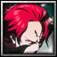

Player profile
nazarian
Rank #6server.eurobattle.netSeason 2
Most played · 竈門 炭治郎
Matches42 wins · 2 losses
Win rate50%
Avg K / D / A32.2 / 42.5 / 15.0
Avg APM100
Avg damage dealt253.0k
Avg damage taken180.2k
Heroes played
Explore heroes →| HERO | MATCHES | WIN RATE | AVG K / D / A | AVG DMG |
|---|---|---|---|---|
竈門 炭治郎Most played | 1 | 100% | 30.0 / 38.0 / 14.0 | 219.0k |
 Shanks | 1 | 100% | 36.0 / 43.0 / 14.0 | 288.3k |
仮面ライダーエボルブラックホールフォーム | 1 | 0% | 49.0 / 32.0 / 15.0 | 322.3k |
Kenshiro | 1 | 0% | 14.0 / 57.0 / 17.0 | 182.6k |
Averages use recorded statistics only; unavailable historical values are shown as —.
Recent matches
Open a match for its scoreboard and kill matchups.